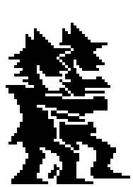
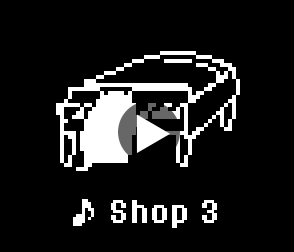
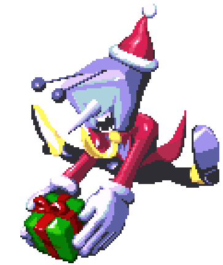
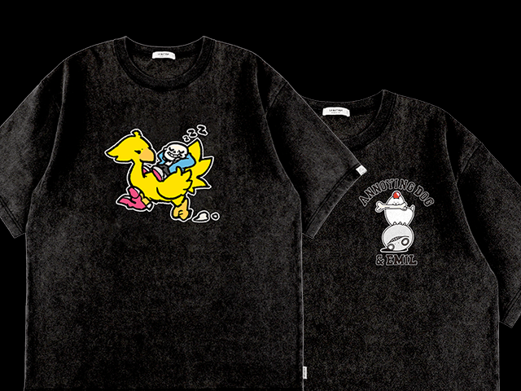
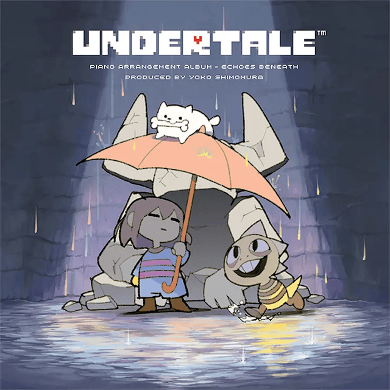
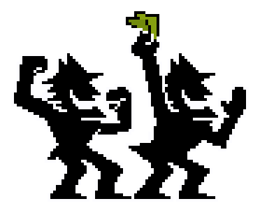

ЗИМА
Холодная вода медленно падает с неба.
Рано или поздно, но неизбежно наступит весна.
Хоть к зиме это никак и не относится, однако представляем вам ещё одно видео из Главы 5 DELTARUNE, происходящее в Городе-замке.
Это продолжение прошлого видео. Чтобы увидеть этот кусок, в Городе-замке должен быть Тенна.
Разумеется, если вы не проходили 3 и 4 главы, то для вас это спойлер.
Прогресс идёт отлично!
Теперь мы сели за локализацию! Мы с компанией «8-4» вытащили текст из игры, а также снабдили весь текст пояснениями для переводчика. (Пост на русском.)
По завершении локализации мы начнём тестирование игры вместе с профессиональной командой тестировщиков.
Ещё нам надо разобраться с тем, как игра будет работать на консолях. Мы начнём обсуждать это с января.
Что насчёт реальных прогнозов, то я бы сказал, что от нынешней точки до релиза нам осталось ещё несколько месяцев.
Удивительно это говорить, но, несмотря на то что всего шесть месяцев назад у вас всех на руках были только «Глава 1» и «Глава 2», основная часть команды, скорее всего, через пару месяцев уже перейдут к «Главе 6»…
ЕЩЁ ПАРА ЗАМЕЧАНИЙ
Все карты в «Главе 5» в целом готовы, осталось немного доделать фоны.
Завершены почти все кат-сцены, осталось подправить всего несколько.
Практически все битвы сделаны, за исключением пары штук. Эта пара штук полностью играбельна, но, чтобы считать их завершёнными, надо внести правки в их темп и в некоторые виды атак.

Я пробежался по саундтреку, и это единственная композиция, которая ничего не спойлерит.

У большинства оставшихся продавцов будет играть эта музыка.
По пятой главе всё!

Опять не относится к зиме, но с выхода 3-й и 4-й глав прошло шесть месяцев, так что почему бы не вспомнить и не поделиться своими мыслями по их разработке?
Зацените, чё умею!
((подошёл близко к камере и всё закрутилось))
Официальная коллаборация SQUARE ENIX и UNDERTALE!
На данный момент вышли футболки и музыкальные альбомы. (Темми тоже поучаствовала в паре дизайнов!)


Не могу не упомянуть фортепианный альбом Echoes Beneath! В его создании и исполнении поучаствовали талантливые ребята из Square Enix. Ёко Симомура (композиторша Kingdom Hearts, LIVE A LIVE, Super Mario RPG и кучи других игр) выступила в качестве продюсера и даже саранжировала одну из композиций!
Классно, да? ((Краснеет и с тихим звуком исчезает))
Стоп, нет! Я могу лучше! ((Распадается на куски и медленно сползает за экран))
Другое дело.
И ещё! В рамках зимней распродажи Steam на DELTARUNE действует скидка -20%!
Через пару дней скидка появится и на консолях, так что не пропустите.
…Хотя, скорее всего, все, кто читает рассылку, уже купили её?

Глава 5!!! Готовится!!! Всё идёт очень гладко!!! С новым, 2026 годом!!!

Перевод выполнен DarkgoD Team